NOSSA HISTÓRIA
Onde ciência, biomas e pele se encontram.
A ORIGEM
A Curie Biocosméticos nasce do encontro entre pesquisa científica de ponta e a força dos biomas brasileiros. A partir do Cerrado e do Pantanal, territórios com uma das maiores biodiversidades do planeta, a marca surge com um propósito claro: transformar frutos nativos em cosméticos naturais de alta performance, preservando as histórias, os saberes e as comunidades que habitam esses lugares.
Com foco em ingredientes como acuri, bocaiúva, guavira e baru, a Curie enxerga esses frutos não apenas como matéria-prima, mas como concentrados de compostos bioativos capazes de regenerar, proteger e equilibrar a pele. Cada fórmula é desenvolvida para unir biotecnologia, respeito ao território e resultados concretos para quem usa, sempre com uma pergunta norteadora: como gerar impacto positivo na pele, nas pessoas e no bioma ao mesmo tempo?
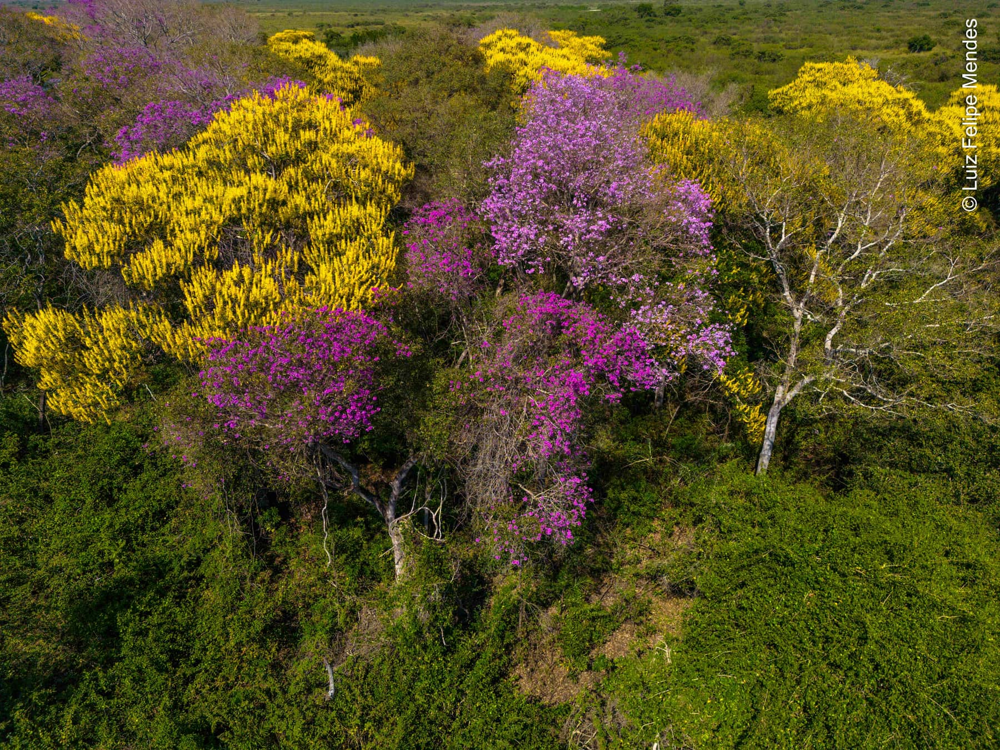
© LUIZ FELIPE MENDES
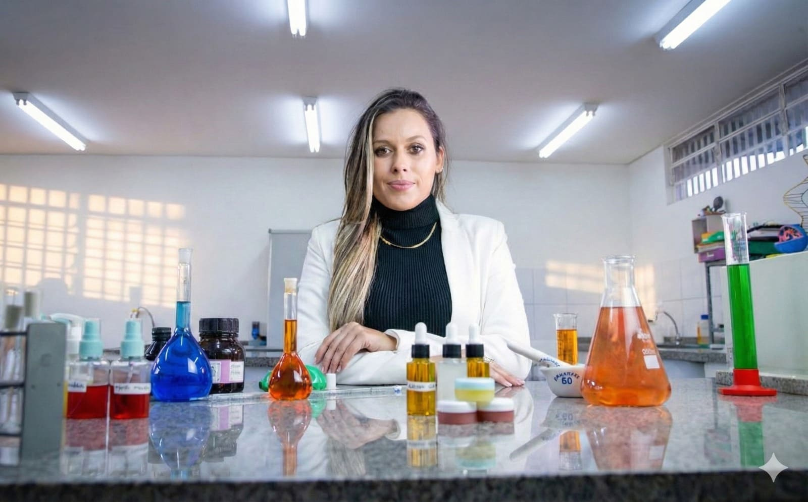
PESQUISA E DESENVOLVIMENTO
A Curie Biocosméticos é liderada pela química Dra. Daniely F. de Queiroz, pesquisadora com mais de 10 anos de experiência em Pesquisa & Desenvolvimento. Formada em Química Tecnológica pela UFMS, possui Mestrado em Química (Físico-Química) e Doutorado pelo Instituto de Química de São Carlos, USP, além de pós-doutoramento (CAPES/PNPD) em biotecnologia e desenvolvimento de novos materiais.
Sua trajetória sempre esteve conectada ao uso inteligente da biodiversidade brasileira. Hoje, ela atua integrando biotecnologia e nanotecnologia ao desenvolvimento de cosméticos naturais, especialmente com ativos dos biomas Cerrado e Pantanal. Cada produto Curie carrega esse rigor: fórmulas testadas, pensadas em detalhe e desenvolvidas para entregar eficácia real, com responsabilidade social e ambiental.
“Comprometo-me a transformar ciência em impacto positivo, desenvolvendo cosméticos naturais de alta qualidade que promovem bem-estar, valorizam a biodiversidade do Cerrado e Pantanal e reafirmam o compromisso da Curie Biocosméticos com a responsabilidade social e ambiental.”
DRA. DANIELY F. DE QUEIROZ
QUEM CAMINHA COM A GENTE
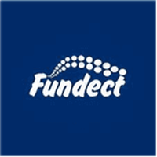
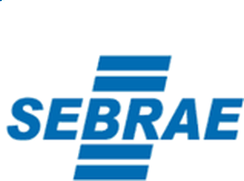
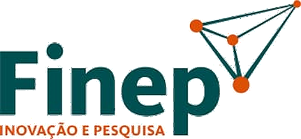
QUEM FAZ ACONTECER
Bancada, campo, sala de aula e palco. Um registro de quem está por trás de cada fórmula da Curie.
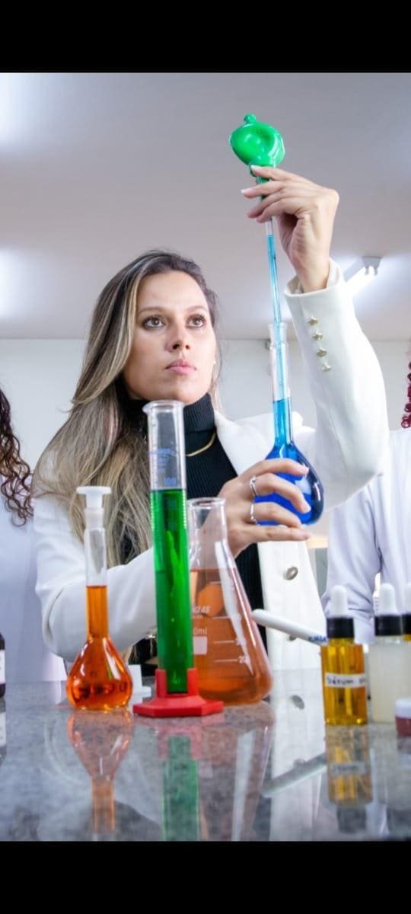
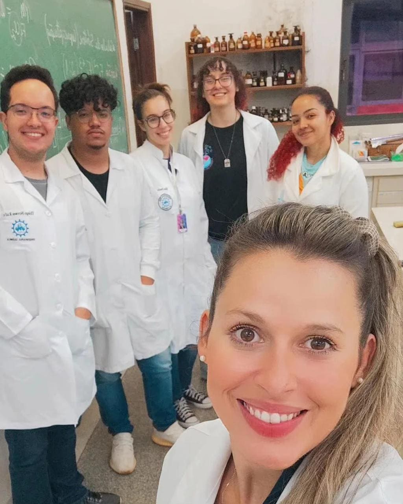
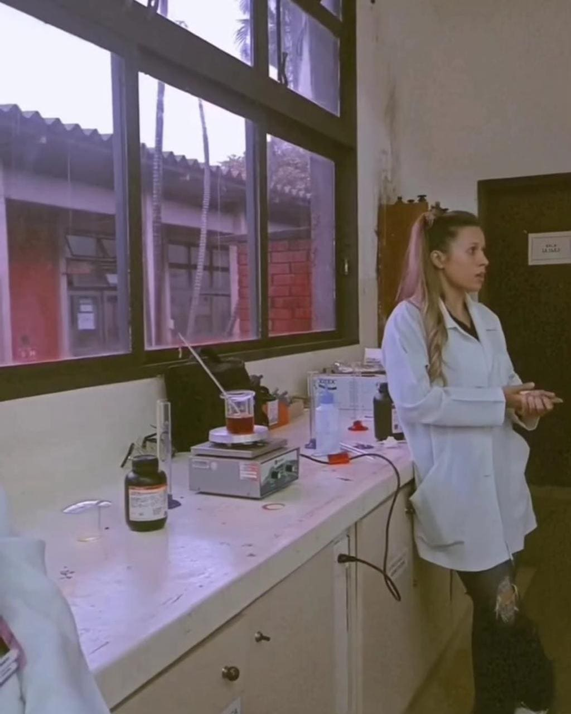
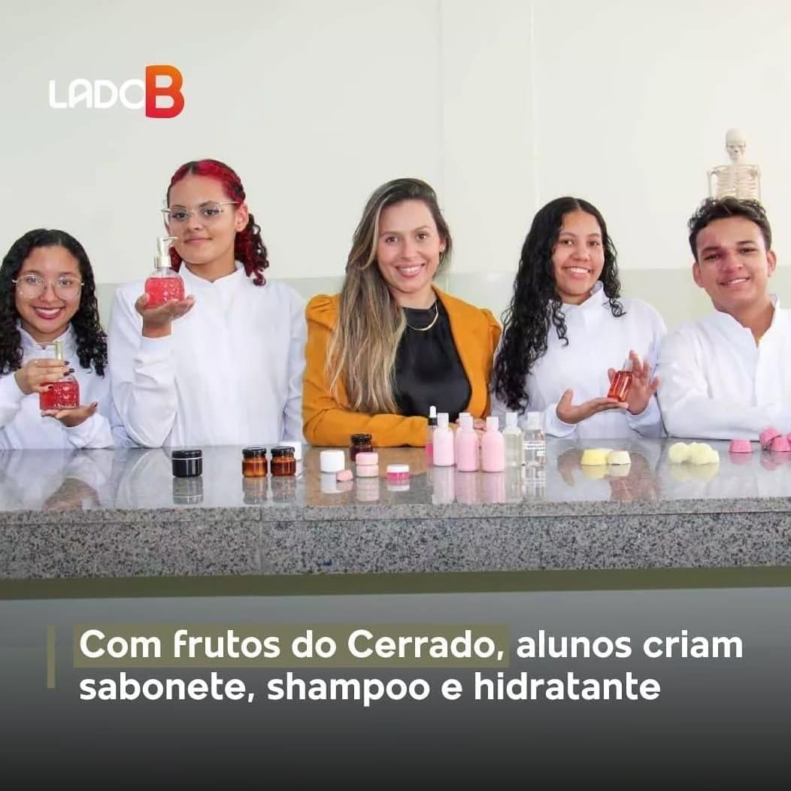
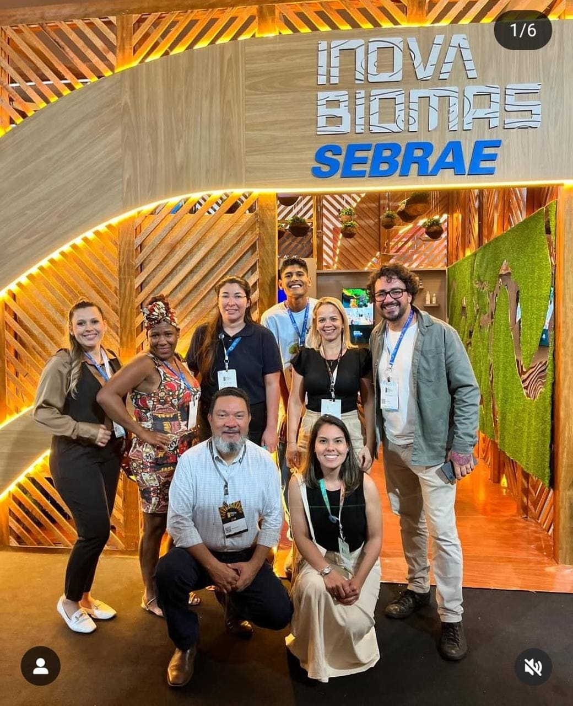
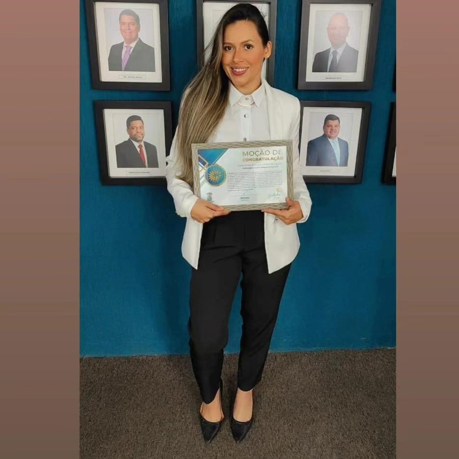
TRAJETÓRIA
A Curie Biocosméticos é resultado de anos de pesquisa e de um movimento contínuo de transformação de conhecimento em soluções concretas para o mercado. Esse percurso vem sendo reconhecido em editais, programas de inovação e iniciativas que impulsionam negócios de base científica no Brasil.
Reconhecimento do potencial inovador da Curie e da relevância do uso de frutos do Cerrado e Pantanal em biocosméticos.
Consolidação da Curie como startup em fase de ideação com base científica e foco em impacto socioambiental.
Avanço para a etapa de tração, com fortalecimento do modelo de negócio e expansão da atuação da marca.
Premiação com participação no Startup Summit 2025, em Florianópolis, conectando a Curie ao ecossistema nacional de inovação.
Seleção em programa voltado a mulheres à frente de negócios de base tecnológica, reforçando o protagonismo feminino na ciência e no empreendedorismo.
Do laboratório à prateleira: fórmulas veganas, sem plástico e de baixo consumo hídrico, feitas com ativos do Cerrado e do Pantanal.
Descubra produtos que combinam ciência, sustentabilidade e a riqueza da biodiversidade brasileira.
VER PRODUTOS